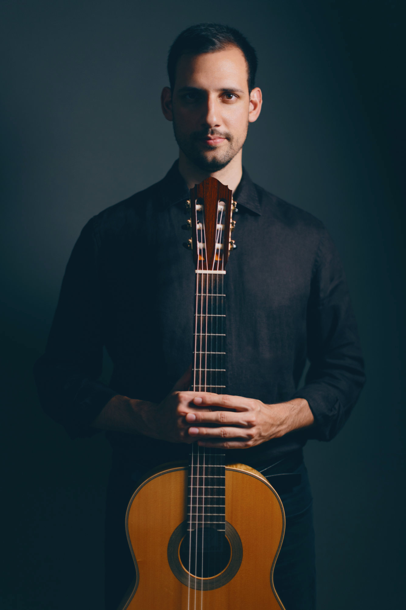

André Ferreira é um guitarrista e alaudista português radicado em Viena. Músico versátil, com uma sólida formação tanto na performance histórica como na moderna, o seu tocar reflete um envolvimento profundo com as possibilidades expressivas das cordas dedilhadas.
Atua regularmente como solista, músico de câmara e instrumentista de orquestra, colaborando com agrupamentos como o Concentus Musicus Wien e o Bach Consort Wien. As suas atuações levaram-no a importantes salas e festivais por toda a Europa, incluindo o Wiener Musikverein, o Wiener Konzerthaus, o Palau de la Música Catalana, o Auditorio Nacional de Madrid, a Kölner Philharmonie e o Brucknerhaus Linz.
A formação musical de André abrange as tradições europeias da guitarra e dos instrumentos antigos de corda dedilhada. Estudou com Margarita Escarpa, Tilman Hoppstock, Paolo Pegoraro, Ricardo Gallén e David Bergmüller, tendo concluído mestrados em Guitarra e em Alaúde, bem como uma licenciatura em Pedagogia Musical.
Desde 2023, integra o corpo docente da Universidade de Música e Artes Cénicas de Viena, onde leciona ambos os instrumentos.
André leciona instrumentos históricos de alaúde no Departamento de Música Antiga da mdw — Universidade de Música e Artes Cénicas de Viena, e dá masterclasses por toda a Europa.